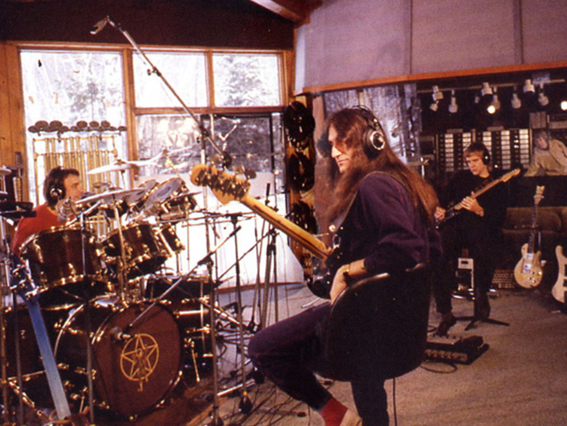
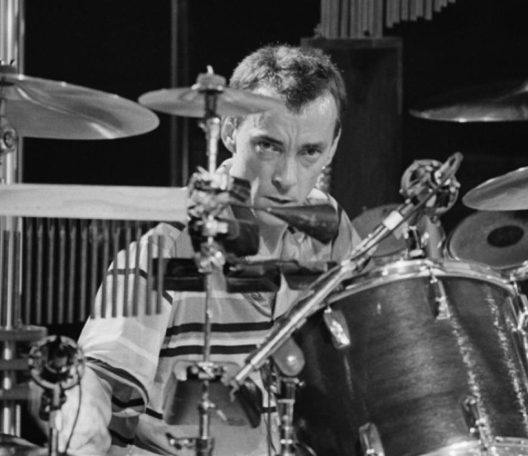

In late 1980, when Geddy Lee, Neil Peart, and Alex Lifeson began writing and recording material for what would become the album Moving Pictures, it's unlikely that they knew that they were about to make their biggest album ever, the album that would forever more be the defining record of Rush, one they would perform on tour in its entirety for a 30 year anniversary of the record's release. But it's been well documented that the trio were excited and felt a sense of inspiration from a new direction.
After 6 albums of increasingly long-form and technical prog-rock compositions, the band began to scale things back on their 1980 release Permanent Waves, opting for tighter song structures and ever-so-slightly more radio friendly material. Neil Peart's lyrics shifted from fantasy and sci-fi themes to more modern and earthly topics. On Moving Pictures, they would take that direction even further, crafting their most radio-friendly songs to date. Though stellar musicianship and some time signature changes were still to be found, they were no longer the central focus. Geddy Lee continued to include more keyboards (specifically the analog synth called the Mini Moog), and Alex Lifeson further developed his signature knack for catchy riffs.
One song that embodied all of this forward motion was "Limelight", a song that was about as catchy as anything the band had ever written. Personal lyrics musing on stardom, the setting aside of Lee's big falsetto singing, a clear verse-chorus structure, and a fairly short run time were punctuated by one of the most understated solos by Lifeson ever (one he says is still his favorite to play live) and a soon-to-be-classic guitar riff to open the song.
"Limelight" wasn't a massive hit, but it did chart at no.4 on the US Billboard Top Tracks list when it was released as a single. But the song has proven to be one of their most popular songs ever and one that is recognizable not just by the myriad of hardcore Rush fans, but also many rock fans in general (and even some non-rock fans).